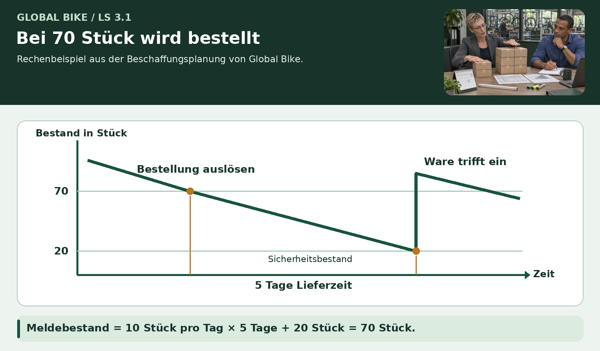

LS 3.1 · M2 · Global Bike
Bestellzeitpunktverfahren und Bestellrhythmusverfahren
1. Bestellpunktverfahren
Beim Bestellpunktverfahren wird der Lagerbestand laufend überwacht. Sobald der festgelegte Meldebestand erreicht wird, wird eine Bestellung ausgelöst.
Der Meldebestand berücksichtigt:
- den Bedarf während der Lieferzeit,
- den Sicherheitsbestand.
Vereinfachte Formel:
Beispiel mit fiktiven Übungsdaten:
- Tagesverbrauch: 10 Stück
- Lieferzeit: 5 Tage
- Sicherheitsbestand: 20 Stück
Der Meldebestand beträgt 70 Stück. Sobald der Lagerbestand diesen Wert erreicht, wird eine Bestellung ausgelöst.
2. Bestellrhythmusverfahren
Beim Bestellrhythmusverfahren wird der Lagerbestand in festgelegten Zeitabständen überprüft, beispielsweise alle zehn Tage. Zu diesen Zeitpunkten wird ermittelt, welche Menge bestellt werden muss.
Die Bestellmenge kann unterschiedlich groß sein, weil sie vom aktuellen Lagerbestand abhängt.
Vereinfachte Berechnung des Zielbestands:
Beispiel mit fiktiven Übungsdaten:
- Tagesverbrauch: 10 Stück
- Überprüfungszeitraum: 10 Tage
- Lieferzeit: 5 Tage
- Sicherheitsbestand: 20 Stück
Der Zielbestand beträgt 170 Stück.
Bei einem aktuellen Lagerbestand von 60 Stück und ohne offene Bestellungen ergibt sich:
Es müssen 110 Stück bestellt werden.
3. Die Verfahren im Vergleich
| Merkmal | Bestellpunktverfahren | Bestellrhythmusverfahren |
|---|---|---|
| Überprüfung | laufend | in festgelegten Zeitabständen |
| Auslöser | Erreichen des Meldebestands | festgelegter Überprüfungszeitpunkt |
| Bestellmenge | abhängig von der gewählten Regelung | abhängig vom aktuellen Bestand |
| Besonderheit | reagiert auf Bestandsveränderungen | regelmäßige Überprüfung |
4. Übungsaufgabe
Für einen Artikel gelten folgende fiktive Übungsdaten:
- Tagesverbrauch: 8 Stück
- Lieferzeit: 6 Tage
- Sicherheitsbestand: 25 Stück
- Überprüfungszeitraum: 8 Tage
- aktueller Lagerbestand: 45 Stück
- offene Bestellungen: keine
- Berechnen Sie den Meldebestand.
- Berechnen Sie den Zielbestand im Bestellrhythmusverfahren.
- Berechnen Sie die Bestellmenge bei der nächsten Überprüfung.
- Erklären Sie den Unterschied zwischen Bestellpunkt- und Bestellrhythmusverfahren.
